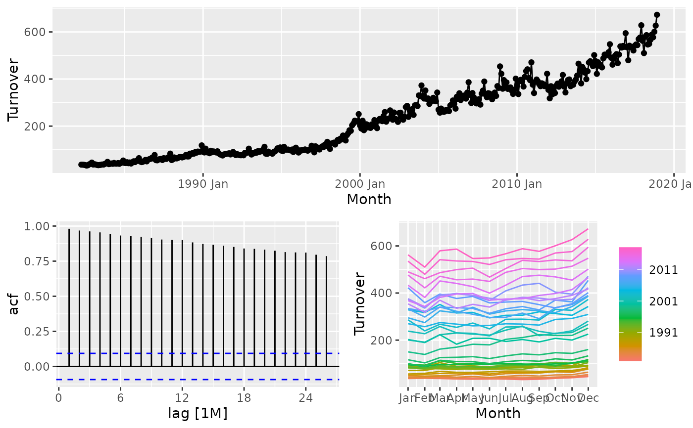

Plots a time series along with its ACF along with an customisable third graphic of either a PACF, histogram, lagged scatterplot or spectral density.
gg_tsdisplay(data, y = NULL, plot_type = c("partial", "histogram", "scatter", "spectrum"), lag_max = NULL)
| data | A tidy time series object (tsibble) |
|---|---|
| y | The variable to plot (a bare expression). If NULL, it will automatically selected from the data. |
| plot_type | type of plot to include in lower right corner. |
| lag_max | maximum lag at which to calculate the acf. Default is 10*log10(N/m) where N is the number of observations and m the number of series. Will be automatically limited to one less than the number of observations in the series. |
A ggplot2 plot.
Hyndman and Athanasopoulos (2018) Forecasting: principles and practice, 2nd edition, OTexts: Melbourne, Australia. https://OTexts.org/fpp2/
library(tsibble) library(dplyr) tsibbledata::aus_retail %>% filter( State == "Victoria", Industry == "Cafes, restaurants and catering services" ) %>% gg_tsdisplay(Turnover)